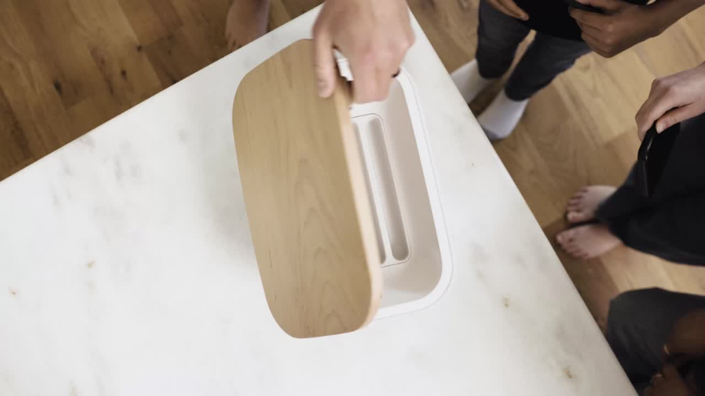

Aro turns screen time into family time
Aro helps families put down their phones to connect, relax, and recharge
Get Started
Extra Link
Introducing Aro
Aro is the first in-home digital wellbeing solution designed for families. The Aro platform ensures you don’t miss out on what’s most important by making it easy for everyone to put down their phones and be fully present
Spend quality time together
We only get so much time with our kids--18 years goes by quickly. Aro helps both parents and kids put down their phones when it’s family time so you don’t look back wishing you spent more time with your family and less time on your phone.
75%
of the time we spend with our kids in our lifetime will be spent by age 12.
Source: 1000 Hours Outside
Teach your kids healthy habits
Giving your kids a smartphone is a stressful decision. Aro helps them develop healthy relationships with their phones, allows you to model good habits, and gives you peace of mind knowing they have the tools to be safe and successful.
83%
of parents believe it's important to have time as a family without screens present.
Source: The Genius of Play
Reconnect with your partner
WWe’ve all been there. It’s the end of the day, the kids are finally asleep, and what happens? We sit down on the couch and pick up our phones rather than connect with the person right next to us. Putting your phone in Aro shows your partner you are truly present with them.
79%
of married couples admit technology distracts them from connecting with each other.
Source: Lasting App
Take some well-deserved "me time"
Sometimes we need to quiet the outside voices a little. Aro is your reminder that it’s OK to take some time for yourself. That could be reading a book, reflecting on the day, or even just getting a good night's sleep. You deserve it.
91%
of adults keep their phones within an arm’s reach all day.
Source: Forbes
Featured In
.svg)
.svg)
.svg)
.svg)

.svg)
See Aro in Action
Aro helps families put down their phones to connect, relax, and recharge.
Watch Now
01:25
The Aro Experience
Aro is so much more than an app and box for you phone. It’s about what happens once you put down your phone. Aro lets parents and kids connect by creating an environment where phones aren't a distraction.
See How it Works
The Aro App
The Aro app gamifies the experience of being off your phone. The app automatically connects to the Aro Home device, measures the time you spend away from your phone, reminds you to take breaks from your phone, shows you data to improve your phone habits, and even lets you connect and compete with others.
See How it Works
The Aro Home Device
It’s beautiful, designed to be seen, and packed full of technology. The Aro Home device automatically connects to your phone when it’s placed inside and starts measuring the time you spend away from your phone. Oh yeah. It charges five phones at once too.
See How it Works

Get Started with Aro Extra Link
“Aro holds us accountable for the time that we spend every day. Instead of looking down at our phones, we’re looking into our kids’ eyes, we’re playing with them, and we’re shaping our family in a more loving and powerful way.”
Clay McInnis, Dad of 2
“Aro holds us accountable for the time that we spend every day. Instead of looking down at our phones, we’re looking into our kids’ eyes, we’re playing with them, and we’re shaping our family in a more loving and powerful way.”
Clay McInnis, Dad of 2
“Aro holds us accountable for the time that we spend every day. Instead of looking down at our phones, we’re looking into our kids’ eyes, we’re playing with them, and we’re shaping our family in a more loving and powerful way.”
Clay McInnis, Dad of 2
Why Aro
A positive and practical approach to putting down our phones to be more present in the moments that matter
Creates space from your phone
Unlike other solutions designed to reduce screen time, the Aro platform combines an app and a physical device to create distance between you and your phone so you can have quality time without the distraction of your phone.
.jpg)
Gives you credit for intentional time
We live in a gamified world - badges, streaks, achievements, and filling in that daily ring. Aro gives you credit for the time you spend engaged in real life because the reward builds the habit of putting down your phone.
.jpg)
Designed with families in mind
We’ve spent years researching, designing, and developing a solution to help both parents and kids. From a beautiful device Mom won’t hate on the kitchen counter to the celebratory GIFs in the app, Aro appeals to the whole family.
.jpg)
Aspirational, yet practical
No heavy handed approaches here. Getting rid of your phone or completely locking it away are not practical solutions. We need our phones...but maybe not at the dinner table or during a conversation. We designed Aro to fit in your everyday rhythms.
89% of interactions with our smartphones are self-initiated.
Source: Dr. Maxi Heitmayer
of people can use their phone when it's not in their hand.

Life happens off your phone
Make phone-free time a part of your daily routine.
- Order your Aro
- About
- Contact
- Subscribe
Join Aro now
FAQs
Our story
Blog
Contact us
Support
The Bluetooth® word mark and logos are registered trademarks owned by Bluetooth SIG,Inc. and any use of such marks by Aro is under license. Other trademarks and trade names are those of their respective owners.
© 2022 Aro. All rights reserved.
Privacy Policy
Terms of Service
Terms of Sale